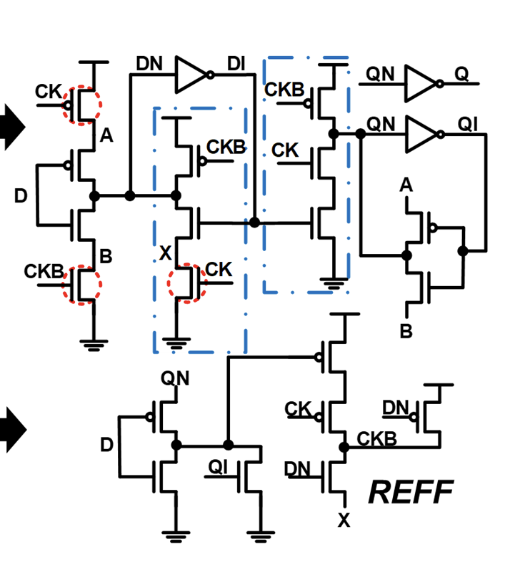
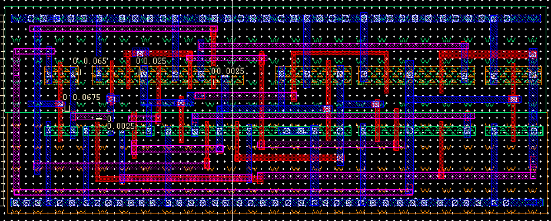
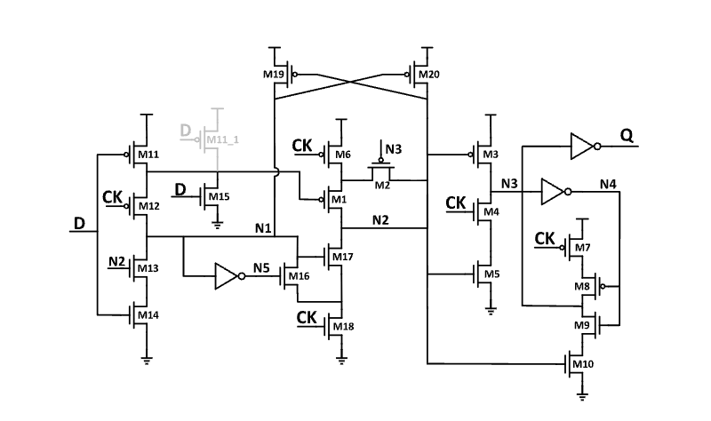
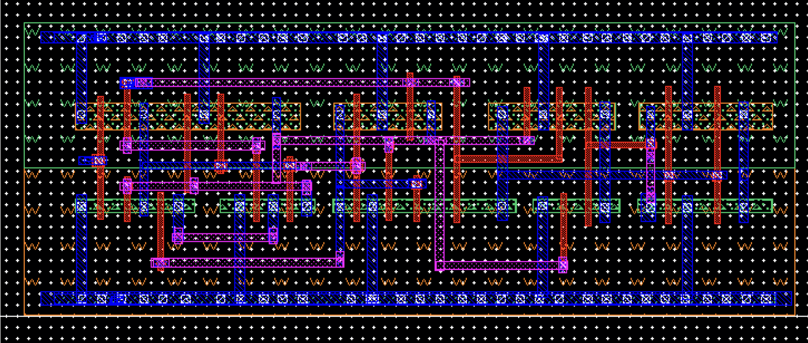
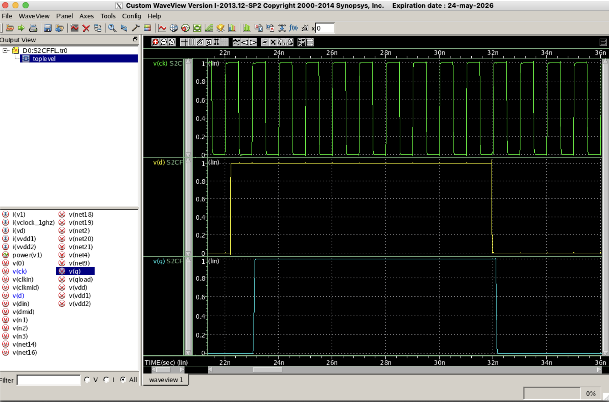

IC design in this project was performed using the following tools:
Cadence Virtuoso for schematic and layout creation, Synopsys Hspice for simulation, Siemens Calibre for layout verification.
The process involved designing a flip-flop circuit based on an IEEE paper. The design flow included the following:
Schematic capture in Virtuoso, followed by layout creation.
Design Rule Check (DRC) and Layout Versus Schematic (LVS) verification were conducted using Calibre to ensure layout correctness and connectivity matching the schematic.
Parasitic capacitances were extracted using Calibre's parasitic extraction (PEX) feature integrated within Virtuoso.
Post-layout simulations were carried out in Hspice to verify circuit functionality through waveform analysis.
Power consumption was measured at different processing corners, operating at 1 GHz frequency, 1 V supply voltage, and 10% switching activity, targeting a 45 nm technology node.
This project involved considerable debugging.
Acknowledgement: Thanks to Dr. Michael Fahy for his strong support of the above CAD tools!
Function: Reduces power consumption by reducing clock signals through only updating the clkb signal if there is a change to the input D
Here is the vertical schematic:
Here is the horizontal layout I created:
Here is the layout's waveform:

Function: Reduces power consumption by eliminating redundant precharge operations and enabling retentive, true single-phase-clock operationting the clkb signal if there is a change to the input D
Here is the vertical schematic:
Here is the horizontal layout I created:
Here is the layout's waveform:
